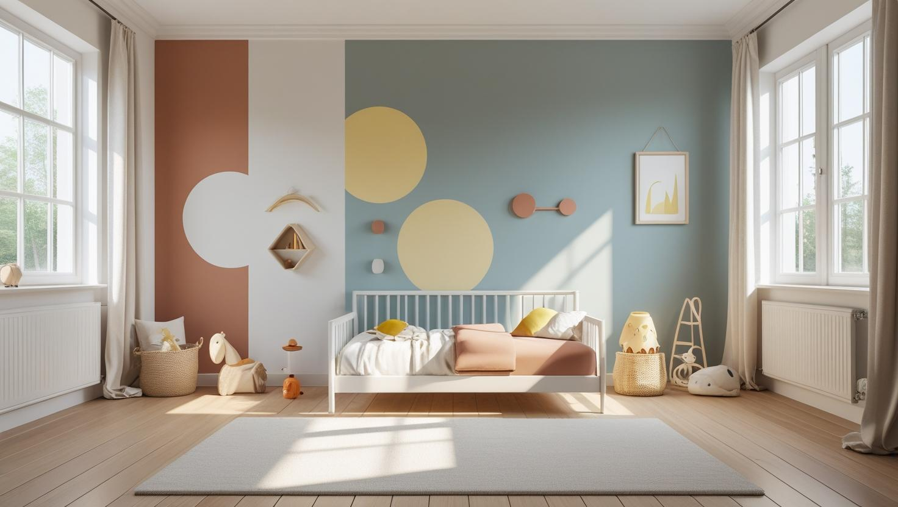
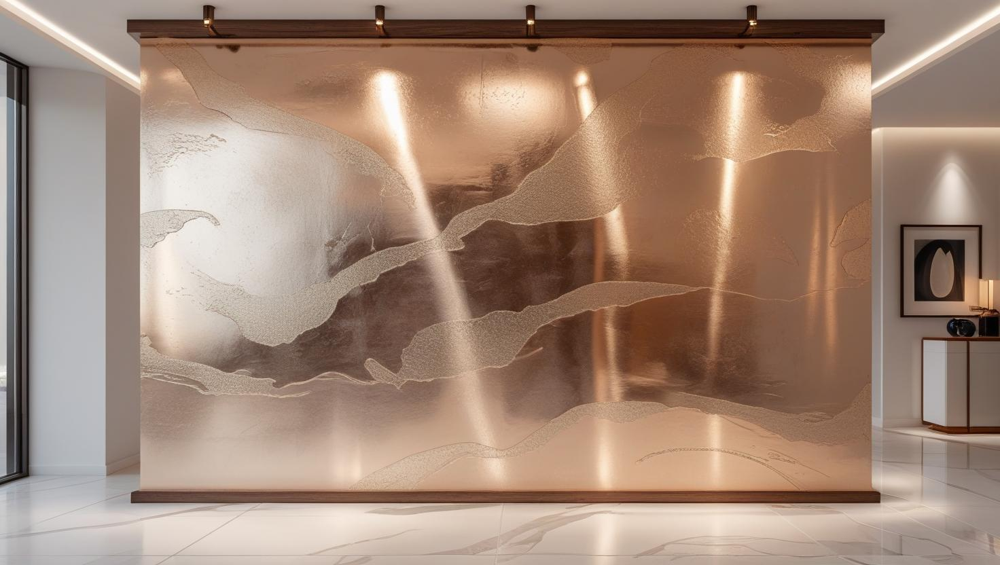

İstanbul Tuzla'da Profesyonel Boya Ustası
İçmeler ve Aydınlı çevresindeki evlerde, sahil hattındaki apartmanlarda ve organize sanayi bölgelerindeki iş yerlerinde Tuzla boya badana işlerini 20 yıllık tecrübemizle üstleniyoruz.
Tuzla'da Boya Badana: İş Yeri, Sahil Nemi ve Yeni Konut Siteleri
Tuzla boyacı talebi ilçenin karma yapısını yansıtıyor. Bir yanda tersane ve organize sanayi çevresindeki iş yeri, ofis ve idari bina işleri; diğer yanda İçmeler, Aydınlı ve Şifa çevresindeki konut stoğu ve yeni konut siteleri.
İş yeri tarafında belirleyici olan çalışma düzeni: üretimin ya da ofisin durmaması için işi mesai dışına, vardiya aralarına veya hafta sonuna alıyoruz. İdari bina ve yemekhane gibi bölümlerde temizlenebilirliği yüksek yüzey tercih edilmesi uzun vadede fark yaratıyor.
Konut tarafında sahile yakın dairelerde deniz kaynaklı nem, kuzeye bakan ve dış duvara sırtını veren odalarda astar seçimini belirleyici hale getiriyor. Yeni site dairelerinde ise yüzey düzgün olduğu için iş astar ve kat uygulamasına odaklanıyor; Tuzla boya ustası talebinin bu tipi genelde daha kısa sürüyor.
Daire, ev, apartman ortak alanı, ofis ve iş yeri işlerinin tamamını yapıyoruz.
Hizmetlerimiz

İç Mekan Boyama
Tuzla'da iç cephe boyası bir yanda İçmeler ve Şifa çevresindeki dairelerde, diğer yanda sanayi bölgelerindeki ofis, soyunma odası ve depo gibi alanlarda uygulanır. Konutta eşya koruması, iş yerinde ise vardiya düzeni ve saha kuralları iş planının merkezindedir.
- İçmeler ve Şifa'da daire boyama
- Fabrika ofisi ve soyunma odası boyası
- Depo duvarında darbeye dayanıklı alt bant
- Yeni konut sitelerinde daire boyama

Dış Cephe Boyama
Denize yakın binalarda tuzlu ve nemli hava dış cephe boyasını daha çabuk yıpratır; sanayi bölgelerindeki binalarda ise toz ve is birikimi yüzeyin boyadan önce yıkanmasını gerektirir. Tuzla'da dış cephe teklifini cephenin bu durumunu yerinde görerek hazırlıyoruz.
- Sahil apartmanında dış cephe yenileme
- Sanayi binasında yıkama ve astar
- Kılcal çatlak ve kabaran sıva onarımı
- Demir doğrama ve korkuluk boyası

Dekoratif Boyama
İş yerlerinin giriş ve yönetim katlarında dekoratif boya, kurumsal rengi taşıyan tek bir duvarla sade biçimde uygulanabilir. Konutlarda ise salondaki bir vurgu duvarı ya da antrede dokulu bir yüzey, mekânı yormadan değişiklik yaratır.
- Yönetim katında kurumsal renk duvarı
- Fabrika girişinde dokulu yüzey
- Konut antresinde dekoratif boya
- Toplantı odasında mat vurgu rengi
Fiyat Tablosu
| Hizmet Türü | Metrekare Fiyatı | Ortalama Süre (100m²) | Garanti |
|---|---|---|---|
| İç Cephe Boyama | 100-200 TL | 2-3 Gün | Uygulama kapsamına göre |
| Dış Cephe Boyama | 180-280 TL | 3-5 Gün | Uygulama kapsamına göre |
| Dekoratif Boyama | 250-500 TL | 4-7 Gün | Uygulama kapsamına göre |
| Ofis Boyama | 150-250 TL | 2-4 Gün | Uygulama kapsamına göre |
Metrekare fiyatları yaklaşık ön değerlendirme aralığıdır. Uygulanacak ölçüm yöntemi, boyanacak alanın kapsamı, yüzey durumu, tamirat ihtiyacı, kat sayısı ve malzeme seçimi keşif sırasında netleştirilir.
Dış cephe boya fiyatları uygulama alanı için yaklaşık 180–280 TL/m² aralığındadır. Kesin hesaplama yöntemi ve teklif; yüzey durumu, bina yüksekliği, erişim veya iskele ihtiyacı, tamirat kapsamı, boya sistemi ve uygulanacak kat sayısına göre keşif sırasında netleştirilir.
Uygulama kapsamına göre işçilik garantisi sağlanır. Garanti kapsamı ve istisnaları teklif veya iş sözleşmesinde belirtilir.
Bu rakamlar İstanbul Boyacılık'ın 2026 gösterge fiyat aralığıdır. Bir piyasa ortalaması değildir. Kesin fiyat; yüzey durumu, hazırlık ve tamirat miktarı, uygulanacak kat sayısı, seçilen malzeme sınıfı, ulaşım ve kat koşulları ile evin eşyalı mı boş mu olduğu keşifte görüldükten sonra belirlenir.
Tuzla'da iş yeri işlerinde aralığı belirleyen şey genellikle yüzey değil, çalışma düzeni oluyor: vardiya dışı ve hafta sonu çalışma, yüksek tavanlı hacimlerde erişim ihtiyacı. Konut tarafında ise sahile yakın dairelerde çıkan nem onarımı ve ek astar, aralığın üst tarafına yaklaştıran ana kalem.
İçmeler ve Sahil Hattındaki Binalarda Dış Cephe Boyası
Tuzla'nın denize yakın mahallelerinde dış cephe boyası tuzlu ve nemli hava, rüzgârla savrulan yağış ve güçlü güneşle birlikte yıpranır; boyanın ömrünü ürün kadar yüzey hazırlığı belirler.
Deniz tarafındaki cephelerde eski boyanın ele toz bırakması, sıvadaki kılcal çatlaklar ve balkon altlarındaki kabarmalar yıpranmanın ilk işaretleridir. Bu işaretler giderilmeden yalnızca üzerine boya sürmek, sorunların kısa süre sonra yeniden görünmesine yol açar.
- Yıkama ve kuruma: Tuz ve kir tabakası yıkanarak alınır; boyaya cephe tamamen kuruduktan sonra geçilir.
- Onarım: Kılcal çatlaklar uygun dolguyla kapatılır, gevşemiş sıva kazınıp yenilenir; aksi hâlde nem çatlaktan içeri girmeye devam eder.
- Boya sistemi: Denize yakın cephede su itici özelliği olan ve yüzeyin buhar geçirmesine izin veren dış cephe boyaları öne çıkar.
Dış cephe boya türlerinin karşılaştırmasını ve maliyet kalemlerini dış cephe boyama fiyatları ve boya türleri yazımızda bulabilirsiniz.
Organize Sanayi Bölgeleri ve Tersane Sahalarında Çalışma Kuralları
Tuzla'daki organize sanayi bölgelerinde ve tersaneler bölgesinde boya işi, sahanın giriş ve iş güvenliği kurallarına göre planlanır; bu kurallar teklif aşamasında netleşmezse işin başlangıcı gecikebilir.
- Giriş ve kayıt: Birçok sahada çalışacak kişilerin ve aracın önceden bildirilmesi, girişte kimlik kaydı yapılması istenir.
- İş güvenliği: Baret, yelek ve iş ayakkabısı gibi kişisel koruyucu donanım ile sahaya özel güvenlik bilgilendirmesi çoğu işletmede zorunludur.
- Çalışma alanı: Forklift ve araç trafiğinin olduğu bölümlerde boyanan alan şeritle ayrılır, geçiş yolları açık tutulur.
- Atıklar: Boş boya ambalajları ve temizlik atıkları sahanın atık düzenine göre ayrı toplanır.
Depo, Atölye ve Soyunma Odalarında Dayanıklı Duvar Yüzeyi
Sanayi işletmelerinde ofis dışındaki destek alanlarının her biri farklı biçimde yıpranır; bu yüzden tek tip boya yerine her alanın kullanımına göre yüzey seçilir.
- Depo: Palet ve forkliftin temas ettiği alt bölümde darbeye dayanıklı koyu tonlu bir bant, üst bölümde ışığı iyi yansıtan açık renk.
- Atölye: Yağ ve is lekesinin sık oluştuğu duvarlarda yıkanabilir boya; ısı kaynağına yakın yüzeylerde boyanın uygunluğu önceden işletmeyle konuşulur.
- Soyunma odası ve duş: Buhar ve nemin yoğun olduğu bu alanlarda küfe dayanıklı astar ve silinebilir boya birlikte kullanılır; havalandırma yetersizse boyadan önce bu konu ele alınır.
Silinebilir boya ile standart plastik boya arasındaki farkları plastik boya mı silikonlu boya mı karşılaştırmamızda bulabilirsiniz.
Tuzla’da Hizmet Verdiğimiz Mahalleler
Aşağıdaki mahallelerde konutlar için daire ve apartman boyası, sanayi bölgelerine yakın adreslerde ise iş yeri boyası için Tuzla boyacı ustası olarak yerinde keşif yapıyoruz:
Tuzla Mahalleleri
- Tuzla Aydınlı Mahallesi
- Tuzla Aydıntepe Mahallesi
- Tuzla Cami Mahallesi
- Tuzla Evliya Çelebi Mahallesi
- Tuzla İçmeler Mahallesi
- Tuzla İstasyon Mahallesi
- Tuzla Mimar Sinan Mahallesi
- Tuzla Postane Mahallesi
- Tuzla Şifa Mahallesi
- Tuzla Yayla Mahallesi
- Tuzla Akfırat Mahallesi
- Tuzla Anadolu Mahallesi
- Tuzla Fatih Mahallesi
- Tuzla Mescit Mahallesi
- Tuzla Orhanlı Mahallesi
- Tuzla Orta Mahalle
- Tuzla Tepeören Mahallesi
Tuzla Boyacılık Müşteri Yorumları
"Tuzla'da boya badana ihtiyaçlarımız için İstanbul Boyacılık ekibini tercih ettik. İşçilikleri çok titiz ve profesyoneldi. Zamanında teslimat ve uygun fiyat sunmaları bizi oldukça memnun etti. Evimizin iç ve dış cephe boyası harika oldu. Kesinlikle tavsiye ederim!"
Ahmet Yılmaz
Tuzla / İstanbul
"İş yerimizin dış cephe boyama işini İstanbul Boyacılık ekibine yaptırdık. Malzeme kalitesi ve özenli işçilikleri sayesinde iş yerimiz yepyeni görünüyor. Tuzla’da güvenilir bir boyacı arıyorsanız mutlaka iletişime geçin!"
Burcu Demir
Tuzla / İstanbul
"İç cephe boyama konusunda profesyonel ve hızlı hizmet aldık. Uygun fiyat ve garantili boya badana işleriyle evimiz ışıl ışıl oldu. İstanbul Boyacılık Tuzla ekibine teşekkür ederiz."
Elif Kaya
Tuzla / İstanbul
Faydalı Bağlantılar
Tuzla boya badana planında fiyat hesabı, boya markası ve yakın ilçe seçeneklerini birlikte değerlendirmek için aşağıdaki rehberler kullanılabilir.
Tuzla'da Ev ve İş Yeri Boyası Hakkında Sorular
Tuzla'daki firmamız için boya teklifini bölüm bölüm alabilir miyiz?
Evet. Ofis, depo, soyunma odası ve dış cephe gibi bölümleri metraj, yüzey hazırlığı, kat sayısı ve çalışma takvimiyle ayrı satırlarda yazıyoruz. Böylece satın alma biriminiz bütçeyi bölümlere ya da dönemlere ayırarak onaylayabilir. Sözleşme ve teslim kontrolünde nelere bakılacağını da keşifte konuşuyoruz.
Fabrika veya atölyemizi üretimi durdurmadan boyatabilir miyiz?
Çoğu durumda evet. İşi vardiya aralarına, mesai dışına ya da hafta sonuna alabiliyoruz ve bölüm bölüm ilerliyoruz. Yüksek tavanlı hacimlerde erişim yöntemi ve gerekli koruma keşifte belirleniyor; makine ve ekipmanın örtülmesi planın parçası.
Tuzla sahiline yakın evde boya neden daha çabuk bozuluyor?
Denize yakın konumda yoğuşma kaynaklı nem, özellikle kuzeye bakan ve dış duvara sırtını veren odalarda daha sık görülüyor. Nemin kaynağı çözülmeden uygulanan boya, markası ne olursa olsun beklenen ömrü vermiyor. Keşifte önce bunu değerlendiriyoruz.
İçmeler'deki evimin balkon demirleri paslanmış; boyadan önce ne yapılmalı?
Pas, tel fırça ve zımparayla sağlam metale ulaşana kadar temizlenmeden yapılan boya kısa sürede kabarır. Temizlenen yüzeye pas önleyici astar, ardından dış ortama uygun metal boyası uygulanır. Denize yakın evlerde korkuluğun birleşim noktaları ve duvara giren uçları daha çabuk paslandığı için keşifte bu noktalara özellikle bakıyoruz.
Yeni site dairemde boya işi kaç günde biter?
Kesin süreyi metrekare, oda sayısı, evin eşyalı olup olmadığı ve çıkan tamirat belirliyor. Yeni site dairelerinde yüzey düzgün olduğu için hazırlık kısa oluyor ve iş genellikle eski yapıdaki aynı büyüklükteki daireden daha çabuk tamamlanıyor. Net gün sayısını keşiften sonra veriyoruz.
İletişim
İletişim Bilgileri
Telefon: 0507 832 29 12
E-posta: boyaustamistanbul@gmail.com
10+ Uzman Ustamızla Tuzla ve çevresine hizmet veriyoruz.
Çalışma Saatleri: 7/24 (Pzt-Paz 00:00-23:59)